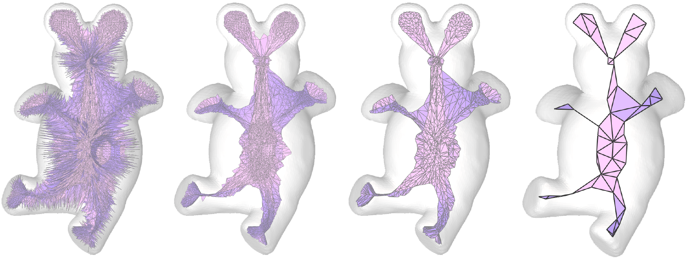
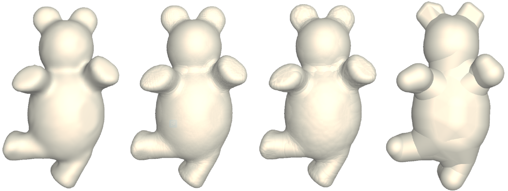

Q-MAT: Computing Medial Axis Transform by Quadratic Error Minimization
Pan Li,
Bin Wang, Feng Sun, Xiaohu Guo, Caiming Zhang and Wenping Wang
ACM Transactions on Graphics 35, 1, Article 8 (December 2015), 16 pages.
Abstract


The medial axis transform (MAT) is an important shape representation for
shape approximation, shape recognition, and shape retrieval. Despite years
of research, there is still a lack of effective methods for efficient, robust and
accurate computation of the MAT. We present an efficient method, called
Q-MAT, that uses quadratic error minimization to compute a structurally
simple, geometrically accurate, and compact representation of the MAT.
We introduce a new error metric for approximation and a new quantitative
characterization of unstable branches of the MAT, and integrate them in
an extension of the well-known quadric error metric (QEM) framework for
mesh decimation. Q-MAT is fast, removes insignificant unstable branches
effectively, and produces a simple and accurate piecewise linear approximation
of the MAT. The method is thoroughly validated and compared with
existing methods for MAT computation.
Downloads
Acknowledgements
We would like to thank Kanglai Qian and Yingya Wei for helping
preparing the video and some illustrations, and the anonymous
reviewers for valuable suggestions. The models we use in
our paper are provided by the database of [Chen et al. 2009] and
Aim-at-Shape. This project was partially funded by National Basic
Research Program of China (2011CB302400), National Science
Foundation of China (61373071, 61272019 and 61332015), and the
Research Grant Council of Hong Kong (718311 and 717813). Xiaohu
Guo is partially supported by Cancer Prevention & Research
Institute of Texas (CPRIT) under Grant No. RP110329, and National
Science Foundation (NSF) under Grant Nos. IIS-1149737
and CNS-1012975.
 hide forever |
hide once
hide forever |
hide once